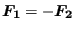

Keyword type: model definition
This option is used to assign a thickness to a node or to a node set. There are no parameters. This keyword only makes sense for nodes belonging to plane stress elements, shell elements and beam elements. For all of these except for the beam elements one thickness value should be given. For plane stress and shell elements this is the thickness in normal direction. The normal direction can be defined by using the *NORMAL keyword card. If none is defined, the normal is calculated based on the geometrical data. For beam elements two thicknesses can be defined: one in 1-direction and one in 2-direction. The 1-direction can be defined on the *BEAM SECTION card, the 2-direction by the *NORMAL card.
The *NODAL THICKNESS card takes precedence over any other thickness definitions if the NODAL THICKNESS parameter was selected on the *BEAM SECTION or *SHELL SECTION card. Right now, it cannot be used for composite materials.
For structures in which axisymmetric elements (type CAX*) are present any thickness defined on the present card for plane stress and shell elements applies to 360.
First line:
Following line:
Example: *NODAL THICKNESS 22,0.05,0.08
assigns to node 22 the thickness 0.05 and 0.08. Any plane stress or shell element containing node 22 will have a local thickness of 0.05 unit lengths at node 22. Any beam element containing node 22 will have a thickness of 0.05 unit length in local 1-direction and a thickness of 0.08 unit length in local 2-direction.
Example files: shell1.